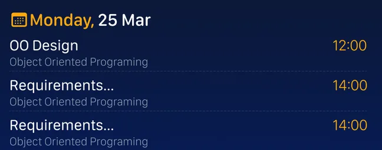
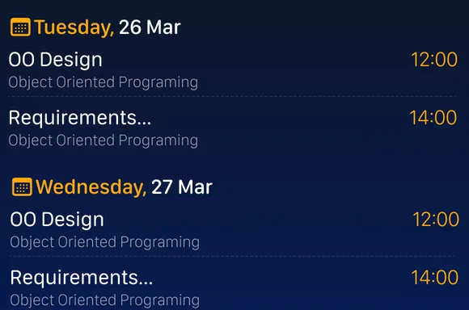
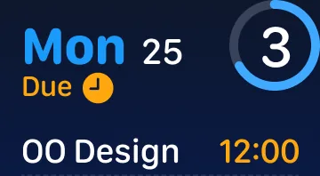

01 — Assignment Reminder
Everything still to hand in, ordered by how soon it is due
At Small and Medium the widget is today’s list. At Large and Extra Large it opens out into the whole week, Monday to Sunday, and each row becomes its own tap target.


-
1 The week, not the day
Small and Medium are headed with the date and the word Due. From Large up the heading changes to This Week / Assignments, and the content changes with it: Monday to Sunday instead of today only. Tapping a row opens that assignment; on the smaller sizes, tapping the widget opens All Assignments.

Small — the date, the word Due, and the same gauge. 
Extra Large · iPad · dark -
2 A gauge instead of a number
The ring fills to the ratio of everything due against what is left.
Heading and gauge -
3 Sorted by the next deadline
Days are headed with an SF Symbols calendar glyph and an amber weekday. Inside a day, rows run earliest deadline first — so with one assignment due at 12:00 and another at 23:59, the noon one sits on top. Each row is the title, the course underneath in slate, and the deadline in amber.
One day, three rows -
4 Two columns, one week
Extra Large is twice as wide as Large but no taller. Rather than stretch the rows, the week is split: the first day runs down the left, the next days pick up in a second column. Large fits five assignments across two days; Extra Large fits ten across three, and nothing shrank to do it.
The second column -
5 Nothing due today
Hand the last thing in and the list does not sit empty — the widget swaps to a state of its own: an icon, “Nothing due today”, and the line “Go touch some grass”. Every size has one, in both appearances.
Empty state